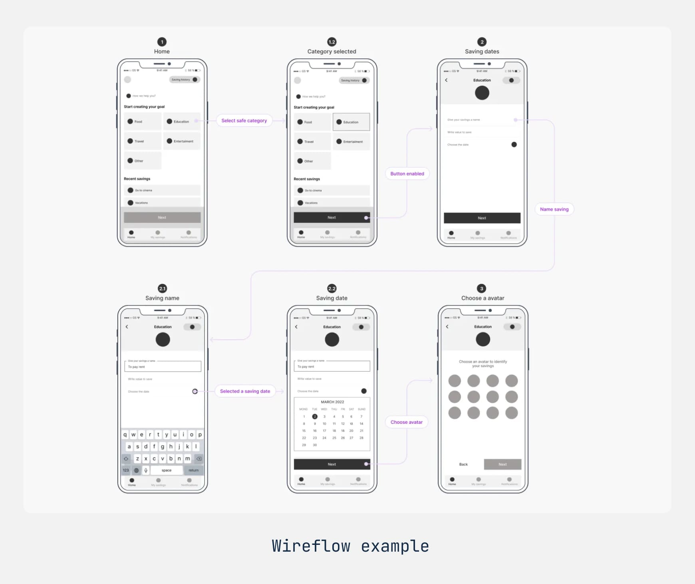

User Flow × 例外路徑 × 低保真 Wireframe × Figma Auto Layout
Agenda
Where We Are
Terminology
Journey vs. Flow
| 面向 | User Journey（Unit 04） | User Flow（今天） |
|---|---|---|
| 尺度 | 宏觀，看整段體驗 | 微觀，看一個任務 |
| 時間 | 數天、數週、數月 | 數分鐘到數小時 |
| 範圍 | 跨通路：廣告、朋友推薦、客服電話都算 | 只在產品裡面 |
| 畫什麼 | 行動、情緒、想法、接觸點 | 操作與系統的回應 |
| 產出物 | 旅程地圖 | Flowchart、Wireflow、Task diagram |
| 資料哪裡來 | 田野研究、日記研究、訪談 | 可用性測試、後台數據 |
Blind Spots
Wireflow

When to Use
| 你的產品長這樣 | 畫這個 | 為什麼 |
|---|---|---|
| 頁面多、每頁內容相對固定的網站 | Wireframe | 重點在每一頁該放什麼，頁面之間的關係用 IA 圖表達就夠了 |
| 流程長、分支多、要窮盡記錄 | Flowchart | 邏輯分支是主角，畫面長怎樣先不重要 |
| 頁面少、但內容隨互動一直變的 App | Wireflow | 不畫出畫面狀態，就講不清楚「哪裡變了」 |
Notation
Anatomy
Edge Cases
IA → Flow
Wireframe
課程列表
課程詳情
播放頁
Fidelity
Trade-offs
| 低保真 | 高保真 | |
|---|---|---|
| 做起來 | 快，省下的時間可以多改幾輪 | 慢，做一版就用掉不少時間 |
| 測試中途 | 當場拿筆改就好 | 要回去改檔案，下一場才能用 |
| 受測者反應 | 壓力小，比較敢講難聽的話 | 當成真的軟體在用，行為更真實 |
| 能測到什麼 | 概念、流程順不順、資訊夠不夠 | 特定元件、可視線索、字好不好讀 |
| 設計師心態 | 還沒投入太多，願意打掉重來 | 做很久了，捨不得改 |
| 老闆的期待 | 看得出還沒完成，預期會再改 | 容易誤以為快做完了 |
Why Low-Fi
Content
Checklist
Figma
Flow Direction
Spacing
| 屬性 | 是什麼 | 可以怎麼設 |
|---|---|---|
| Padding | 容器邊緣跟裡面的東西之間的留白 | 四邊統一、上下左右分開，或四個值各自設 |
| Gap between | 裡面的東西彼此之間的距離 | 給固定數值，或設成 Auto 讓它們平均散開 |
Resizing
| 模式 | 能套在誰身上 | 它會做什麼 | 什麼時候用 |
|---|---|---|---|
| Hug contents | 只有 Auto Layout 容器 | 縮到剛好包住裡面的東西 | 按鈕：文字多長，按鈕就多寬 |
| Fill container | 只有子元件 | 撐滿父容器剩下的空間 | 輸入框：不管視窗多寬都填滿 |
| Fixed | 容器跟子元件都可以 | 尺寸就是不變 | 頭像、圖示這種固定尺寸的東西 |
Constraints
| 設定 | 水平方向的行為 |
|---|---|
| Left / Right | 跟左邊界（或右邊界）保持固定距離 |
| Left and Right | 兩邊都固定，所以圖層自己會跟著變寬變窄 |
| Center | 永遠對齊中線 |
| Scale | 尺寸跟位置都按比例縮放 |
Resources